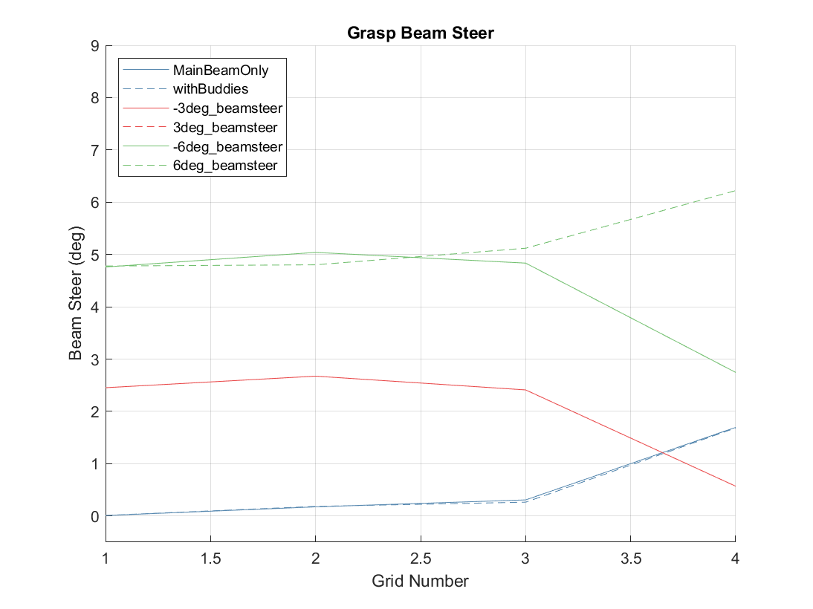
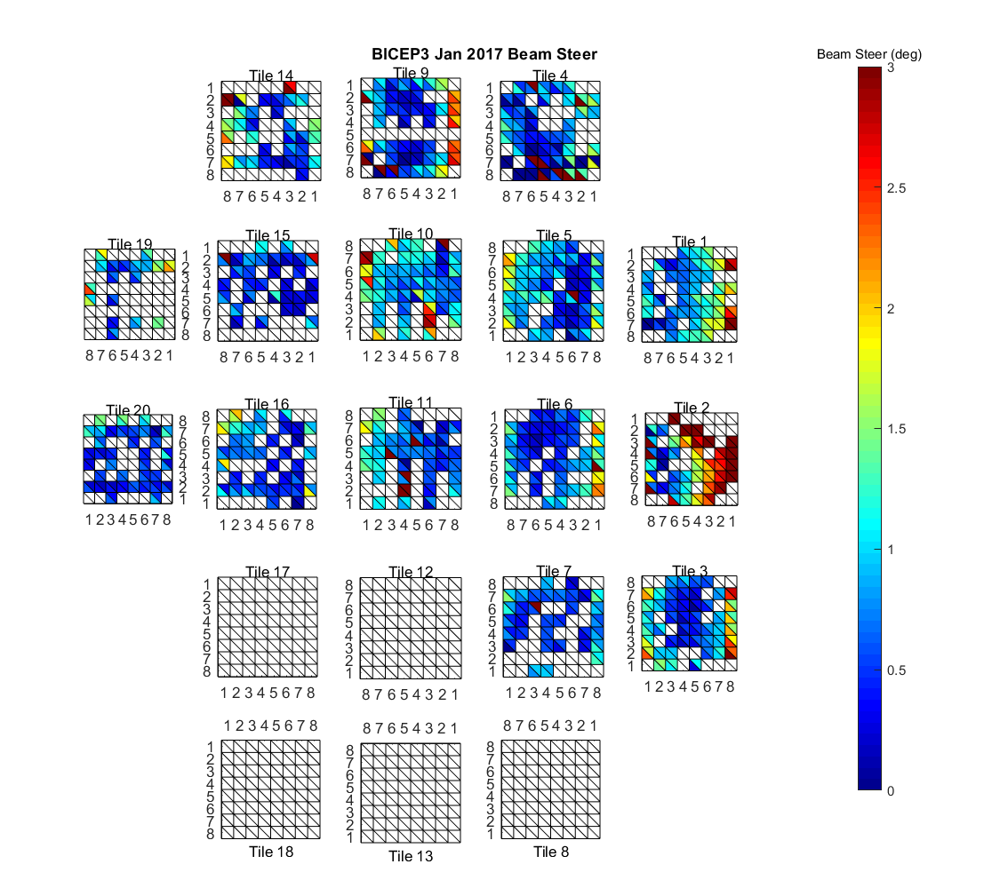
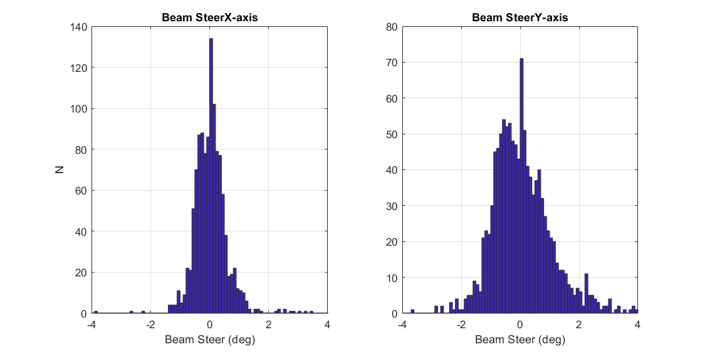
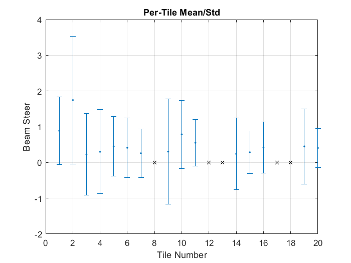

A Comparison of Measured and GRASP-Simulated Near Field Beam Maps
— J. Cornelison, K. McGowen
Grasp Sims
The following GRASP sims have been converted and run through the metrics analysis pipeline. The pager below shows maps of the GRASP sims, downsampled to match the same pixel spacing as the BICEP3 Jan 2017 data (~14mm/pix).
It should be immediately obvious that the $\pm3^\circ$ beam steer maps are identical. This is because the data for these on the Google Drive are also identical. I've contacted Paul about rectifying this.
Beam Steer
Converting Beam Steer from mm to degrees
In a previous posting, I defined the beam steer as a lateral offset between the beam center and aperture center ($r_{beam}-r_{apt}$) in NFBMs and offered previous results in units of mm. In practice, beam steer is more easily comparable to sims when converted from that lateral offset into an equivalent offset angle, $\theta_{bs}$, of the beam trajectory WRT to the focal plane normal. This is computed by using the ratio of angular apterture, $a$, to the aperture radius, $D/2$
Realistically, the $N_f$ varies across the focal plane, but I've verified through Zemax that using the "working" $N_f$ is approximately good to within 4% across the whole focal plane.
Near-Field Corrections to the Aperture Function
We use a plate scale function to calculate the apparent aperture centers for each detector based on their on-sky pointing ($r,\,\theta$):
\begin{equation}
\begin{split}
&x_{apt} = -d \tan(r)\cos(\theta+\phi)+x_{0}\\
&y_{apt} = d \tan(r)\sin(\theta+\phi)+y_{0}
\end{split}
\end{equation}
and we had some intuition that this could be slightly non-linear in the near field due to parallax. To check this, the idea was to determine the physical x-y positions chief rays coming off the focal plane in the plane of the near field beam mapper using Zemax and then compare those values to those calculated by our plate-scale function using the same distance.
To verify that our model (and method) was correct, we first needed to verify that we could correctly calculate far-field pointing before moving on to the near field. We had a summer student (Kaylah McGowan from UofA) re-blaze the trail for converting detector locations on the focal plane ($R_{FP}$) into on-sky pointing ($r_{SKY}$) at the far field via Zemax models (see for previous work).
In essence, her recipe was as follows:
For a given model, create a dummy lens object at the very end of the lens system in "lens data".
Set the dummy lens object thickness to very far away (we set ours arbitrarily to 5e6 mm)
Using the "single raytrace" tool, record the z-cosine value after the dummy lens object for a series of distances on the focal plane (normalized in OptStudio from 0 to 1 for FP center and edge respectively).
Convert FP distances from normalized to mm and ray angles to degrees (using arccos) to produce an array of $R_{FP}$ vs. $r_{SKY}$.
Fit a 4th-order polynomial (with no constant) to the $R_{FP}$ vs. $r_{SKY}$ data to produce a function which converts radial distance on the focal plane to on-sky pointing WRT to boresight.
Her results for a far-field case compared to those from JWB's posting are shown below. We find that Kaylah's results deviate, at most, on the order of 1 arcmin compared to JWB's, which we think are sufficiently close for our purposes.
Thanks to Kaylah, I was able to take this project one step further and calculate $r_{SKY}$ for the near-field case to see if we can detect significant deviations in pointing in the near field which would skew our beam steer results. I followed her recipe as described above but instead set the dummy lens object thickness to 366mm to match the near field mapper distance of 508mm (20 inches) from the aperture set in Paul's GRASP sims. For convenience, I wrapped steps 3 and 4 in her procedure in a Zemax macro: rfpu_to_rsky.ZPL
In the plot below, I compare the near-field results to the Kaylah's far-field results. We can see that the near-field pointing is nearly identical, deviating at most by ~2 arcseconds.
I then computed the positions at which the rays intersect the mapper plane $R_{apt}$ (using rfpu_to_rsky.ZPL) and compared them to the positions calculated by the plate scale function assuming $x_0=y_0=\phi=0$ and $d=508\,\text{mm}$. Because the plate scale function uses $r,\,\theta$ as inputs instead of $R_{FPU}$, I used the near-field 4th-order polynomial function described above to convert $R_{FPU}$ to $r_{SKY}$ before computing $R_{apt}$. Results from Zemax and the plate scale function are plotted below along with their residuals.
In the plot above, we can clearly see that higher order effects cause deviations in the residuals up to $\sim0.6\,\text{mm}$ at the edge of the focal plane which amounts to $<0.05^\circ$ bias on beam steer.
Beam Steer in GRASP sims
Like real data, I calculate aperture center on each map (see $\S 4$ of ) to center the maps before calculating beam steer. For the sims, I assume zero $x$, $y$, or $\phi$ correction and set the mapper distance to 508mm (20") to reflect the mapping plane set in the sims. After centering the maps, I estimate the beam centers using a 4-parameter cylindrically symmetric gaussian ($\left[A x_0 y_0 \sigma\right]). Additionally, to avoid errors on the fit from deformationa at the aperture edge, I zero-weighted all data outside a diameter of 385mm. Cacluating the beam steer is trivial as, since the maps are already centered, the beam steer is simply equal to the estimates on the beam centers.
The pager below show the GRASP sims with the measured beam steer overplotted with a green 'x'.
GRASP sims with measured beam steer overplotted with a green 'x'. Data outside the black line were zero-weighted during the fits.
We can see from the plot above that the beam steer estimates become less reliable as the beam steer increases. The plot below shows this more quantitatively where the estimates for both 3° and 6° magnitudes of beam steer are underestimated by ~16% and ~20% respectively.

Beam Steer estimations for each Grid for the various GRASP sims. "MainBeamOnly" and "WithBuddies" are expected have zero steer.
Beam Steer on BICEP3 2017 data

Tile plot of beam steer measured across the focal plane for BICEP3.
Quiver Plots of beam steer showing relative magnitude and direction or direction only.

histograms of beam steer in x and y axes in left and right plots respectively.

Per-Tile averages of beam steer and 1-$\sigma$ standard deviations
Summary
Grasp models
Analysis Pipeline
Data Reduction
Before I committed changes, the three functions below are a snapshot of the current (working) NFBM pipeline. The
primary purposes of these functions is data reduction, mapmaking, and plotting for data quality
respectively.
nfbm_makemap.m - Loads raw detector timestream data from NFBM observations and deconvolves, demodulated, and bins them into maps at the per detector level.
nfbm_fitter.m - Fits bivariate 2D Gaussians to binned maps.
nfbm_plotter.m - Plots maps for data quality purposes.
NFBM Metrics
The following code was written for the sole purpose of streamlining the measurement of arbitrary metrics in NFBMs. While we are currently only measuring beam steer and edge taper, the code is constructed in such a way that accomodating new metrics is easy. All parameter estimations are done through our Matlab wrapper for MINUIT called `matmin.m`.
nfbm_fit_metrics.m - Wrapper function which measures metrics related to Near Field Beam Maps. Currently measures beam steer and edge taper.
nfbm_fit_aperture.m - Finds apparent aperture centers for channels by shifting and masking beams using four global parameters in conjunction with their on-sky pointing. See $\S\,4$ of for details.
nfbm_get_apt_model.m - 4-parameter + 1 nuisance parameter model that shifts and masks beams maps. For use by matmin.m.
nfbm_get_apt_center.m - Given some location of the mapper center ($x_0,\,y_0$), mapper distance $d$, and mapper rotation $\phi$, returns the apparent aperture centers for all input channels of $r,\,\theta$.
nfbm_fit_beam.m - Fits a 2D Gaussian beam to NFBMs of all selected channels.
nfbm_get_apt_model.m - Bivariate or cylindrically symmetric Gaussian model with optional masking ability.
nfbm_get_beam_steer.m - Acquires beam steer for selected channels.
nfbm_get_edge_taper.m - Acquires measures of edge taper from maps of selected channels
Interfacing GRASP sims with the NFBM metrics pipeline
Grasp sims come in a standard format, so I've added some code that easily converts the numpy files into a Matlab
struct that we can run through the NFBM analysis pipeline. Currently, the conversion from .npz to
.mat is done via Python. I have preliminary matlab code that can do this as well, but the python
handles this much better. If there's a strong demand to develop the matlab function for uniformity's sake, I can
do that.
npz_to_mat.py - one-to-one conversion of GRASP .npz files into matlab compatible .mat structs. Requires scipy.
grasp2nfbmstruct.m - Loads the raw GRASP sim data and outputs a struct identical to those taken by the NFBM pipeline including faux FPU parameters and channel flags using get_grasp_array_info.m.